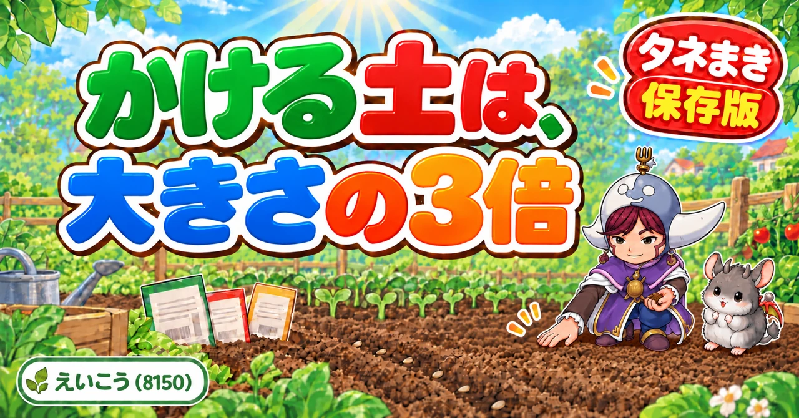

HOME GARDEN NOTE
I'm Eiko. Eight years of growing vegetables organically and without pesticides in central Japan, and a teaching licence in science — so every article ends with the mechanism, not just the instruction. Each one comes with diagrams.
Where these notes come from. I garden in central Japan, roughly USDA zone 8b–9a. Most of what's here is about how plants work, so it travels anywhere — but where timing matters I write it as "weeks before your first frost" rather than a calendar month, so you can put your own dates in.
About the diagrams. They're in Japanese, because they're the same diagrams as the Japanese edition. Under each one there's a box headed "What this diagram says" with every label translated, so you're not missing anything.

Nearly every seed that fails to sprout was simply buried too deep — a seed reaches the surface on the food packed inside it and nothing else. The three things germination needs, why firming the soil matters, and how long old seed stays viable.
Read on →I grow vegetables organically and without pesticides on a small plot in central Japan, and I've been doing it for eight years. I also hold a teaching licence in science, which is why these articles tend to end with why rather than stopping at what.
Nearly everything here started as something I got wrong first. Where I'm not sure of something, I say so.